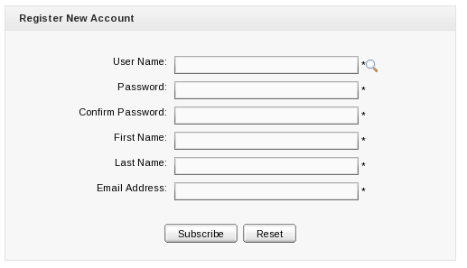
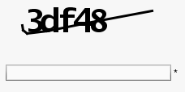
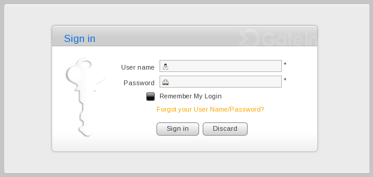
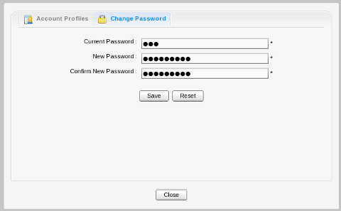
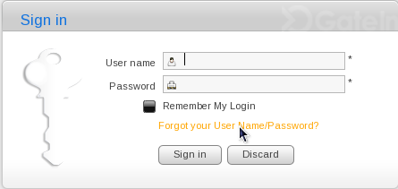
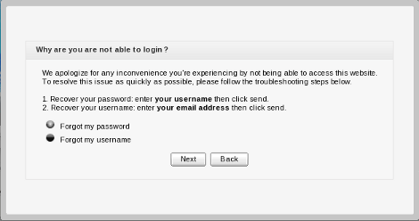
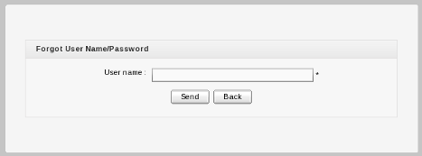

Unregistered users visiting the portal are limited in the content they can see.
Users who need access to deeper content or who need to perform actions within the portal should register themselves and then contact the portal administrator to gain appropriate access permissions to their account.
Users can quickly and easily register a new account for themselves.
Click Register on the Navigation bar.
The Register New Account page appears:
The required information includes:
- User Name
The name used to log in.
- Password
The password must be between 6 and 30 characters and can contain spaces.
- Confirm Password
Re-type the password above. The Password and Confirm Password fields must be the same.
- First Name
The user's first name.
- Last Name
The user's last name.
- Email Address
The user's email address. This must be in the appropriate format. For example:
username@abc.com.
Fill in the form.
Click the 'find' icon beside the user name field to check whether the chosen username is available.
Enter the text next to
verification:into the text box that appears below it:Click Subscribe to register a new account or Reset to refresh all entered values. You cannot add a new account if one of the following cases occurs:
The chosen User name already exists or is invalid.
The Password has less than 6 characters or more than 30 characters.
The Password and Confirm Password fields are not the same.
The Email Address format is not valid.
A required field (or fields) is empty.
After adding a new account, you should contact the administrator to set appropriate permissions on your account.
Note
Be sure you enter your email address carefully. Should you forget your user name or password, you can recover it from this email address.
In order to enter the portal in private mode, you should use the account previously registered.
To sign in to a portal, users must complete the Sign in form. This form contains the following elements:
- User name
The registered user name.
- Password
The registered password.
- Remember My Login
Check this box to avoid log in every time
- Forgot your User Name/Password?
To follow some steps to get the forgotten user name or password. Please refer [Portal:Account and Password Retrieval] for more details.
- Sign in
To sign into GateIn 3.2 with user name and password.
- Discard
Close the Sign In form without logging in.
Go to your portal by entering the URL into the address bar of your browser (For example http://localhost:8080/portal).
Click the Sign in link at the top right of the page if you are current in the Classic portal. The Sign in form appears:
Input your registered User name and Password .
Select the Remember My Login check box when you sign in GateIn 3.2 at the first time if you want to automatically return to GateIn 3.2 without signing in again. You can see Section 4.3, “Remember User Account” for more details.
Click the Sign in button to submit the form or Discard to escape.
If the user name does not exist or the user name and/or password is invalid an alert message will appear. To attempt the log in again; click the OK button on the alert message to be returned to the Sign In form. Enter the user name and password again.
After signing in, you will be redirected to the homepage and welcomed with your full name in the top right corner of the page.


Users who return to GateIn 3.2 regularly can be automatically authenticated to avoid performing an explicit authentication each time they access the portal.
Input your registered user name and password.
Select the Remember My Login check box when logging in GateIn 3.2 at the first time.
Click the Sign in button to sign in the portal.
Do not sign out when you leave the portal and you will be automatically authenticated next time you visit it.
To change your account information, click on the account name in the top navigation bar:
The Account Profiles form will appear:
To change your Account Profile information:
Select the Account Profiles tab.
Your User Name cannot be changed. You can change your: First Name , Last Name and Email.
Once the desired changes have been made, click the Save button to submit them.
If you want to change your Password :
Select the Change Password tab, it will display the following form:
Input your current password to identify that you are the owner of this account.
Input your new password, it must have at least 6 characters
Re-enter your password in the Confirm New Password field.
Click the Save button to accept changes.
You can recover your username or password should you forget them by following these steps:
Click the link 'Forgot your User Name/Password?'
This form offers two options:
Forgot my password.
Forgot my username.
Select the appropriate option and click Next.
You will be prompted to provide identification information depending on which option you selected:
If you selected the Forgot my password option you will be prompted for your username:
If you selected Forgot my username you will be prompted for your email address.
After you submit the form an email will be send to your email address with the requested information, either your username or password.
If you forgot your password you will be sent a new (temporary) password. Your original password will not be valid after this email is sent. You will be directed to a page to update your password the next time you sign in.